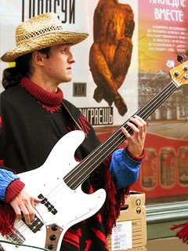

“Великое рок-н-ролльное надувательство-2. Часть первая (продолжение) (АПН)

III
Наибольшее подозрение вызывал размер толп. Нет, разумеется, артисту нравится, когда публики много. Стадионы и дворцы спорта после ДК и подвалов, не говоря уже о квартирниках, приятно возбуждали и тешили самолюбие. (А некоторые — как, например, «Алиса» или «Кино» — только в этих условиях смогли найти свою специфическую энергетику и стиль). Но одновременно это же и пугало: мы слишком хорошо помнили, что большинство этих людей еще пару лет назад слушали советскую попсу и западное диско — и вовсе не потому, что не могли достать самиздатовских магнитоальбомов — просто эта музыка больше соответствовала их запросам. Когда прожекторы перестройки выхватили из полумрака наши смущенные ряды, широкие народные массы слетелись на свет по тому же самому механизму, по которому на лампочку на дачной веранде слетается мошкара. Казалось сбывается (анти?)утопия БГ:
Еще немного, и сбудется мечта,
И наши люди займут места,
Под страхом лишения рук или ног
Мы все будем слушать один только рок.
Русский рок мыслил себя изначально как искусство довольно ограниченной социальной группы — или просто привык к такому положению за десять лет андерграунда. Поэтому когда с наступлением 90-ых стадионные толпы кинулись, топоча, в направлении афиш с надписью «Ласковый май» наступило не разочарование — облегчение.
Вторым кошмаром перестройки (после толп полюбивших рок гопников и мажоров) были те самые «интерпретаторы», о которых я писал выше. Они путались у нас под ногами, объясняли зачем и что мы делаем, и вообще мешали нам жить. В одной из своих статей Сергей Жариков (ДК) утверждает, что Артем Троицкий, Илья Смирнов и Миша Сигалов были тремя агентами КГБ, каждый со своим спецзаданием в отношении русского рока. Возможно, так оно и было, Жарикову видней, поскольку сам он, судя по всему, вел какую-то четвертую, особенно хитроумную разработку. Вообще каляевщина и гапоновщина была изначально присуща всей этой публике как в начале XX века, так и сейчас, в начале третьего тысячелетия. Они стучали друг на друга, поливали друг друга грязью сперва в своих самодовольных листках — «Урлайтах», «Контркультурах» и иже с ним, а потом уже и во всесоюзной молодежной печати. Их терпели, с ними общались, но не уважали. Поэтому когда они схлынули, как тараканы с квартиры с пустым холодильником, устремившись к разверзшимся зияющим высотам политической журналистики, нарождавшегося гламура и политтехнологий, никто не пролил скупой мужской слезы
К 1990 году русский рок полностью утратил свою конъюнктурную привлекательность. Серебряная ложечка в форме гитары, которой разбивали скорлупу советской системы, была отложена в сторону, а те, кто ей орудовали, бросились, затаптывая соседа, в пробитую брешь делить мягкий белок и беззащитный желток реальных ценностей. Нас оставили там, где мы изначально и хотели быть — в покое. И началась золотая эпоха русского рока. Да, вопреки широко распространенному мнению я считаю, что именно 1990–96 гг. имеют право носить это имя. Именно тогда были записаны лучшие альбомы, сказаны главные слова, сыграны самые сильные концерты. Именно тогда музыканты занимались тем, чем они должны были в основном заниматься. Музыкой. Власть нас не замечала, а мы ее презирали — и это всех устраивало.
Для любителей исторических мифов достаточно будет сказать: если русский рок выражал идеологию победившей элиты, то где же тогда правительственные концерты в КДС? золотой дождь внимания и государственные премии? Нет, в Кремле пела и плясала истинная, посконная любовь кремлян — попса. Проводила «Рождественские встречи» дебелая Алла Пугачева, заводил свою вечно одинаковую песню с вечно разными словами лилипут Газманов, ублажали ресторанный досуг малиновых пиджаков «На-На» и Шафутинский. Рокеров не было на этом празднике жизни. (Пара-тройка орденков полученных теми, кто сдуру примчался на августовские баррикады, не в счет. Кого только на этих баррикадах не было! Без преувеличения две трети нынешних разоблачителей «антинародной олигархии» на них так или иначе отметились.)
Это — о тусовочных радостях. Если же говорить о творчестве, вы не найдете у рокеров вроде бы ожидаемых пеанов наступившим светлым временам. От «Московской Октябрьской» БГ до «Титаника» НП, от демонических кошмаров «Алисы» до разночинской тоски Шевчука (промолчу уж о конкретно политизированных Талькове и Летове) — все было наполнено ощущением надвигающейся катастрофы, подступающего кошмара, наставших темных веков.
Любить начальству нас было не за что, но и мочить — тоже невозможно. Вседозволенность была необходимым условием для реванша советско-антисоветского либерально-патриотического курятника и ее издержки полагалось воспринимать со стоической улыбкой, памятуя о том, что каждый ее день пополняет твой счет на несколько миллионов долларов.
Итак, подводя итог, в каком-то смысле для нас наступило новое подполье — только относительно сытое и комфортное. Безусловно, у этой ситуации, как и у всякой ситуации на свете, имелась своя изнанка. Имя ей было — коммерциализация. Потому что в новых условиях выжить могли только монстры. Весь же второй эшелон, молодая смена русского рока оказались обречены на вымирание в соответствии с суровыми законами социального дарвинизма.
Сколько великолепных групп погибло в начале девяностых! «Нюанс» и «Вежливый отказ», «Апрельский марш» и «Выход»… дополните список сами. Кто-то спекся, кто-то ушел в бизнес, кто-то эмигрировал… Это отсутствие резерва со временем сыграла трагическую роль в кризисе и последующем угасании русского рока.
Ну и становление капиталистической системы шоу-бизнеса. В 90-ые мы еще гордились тем, что, в отличие от попсовиков, сами набирали и увольняли директоров и никогда не проплачивали эфиры. Но было понятно, что общие законы рано или поздно возобладают — на то они и общие законы.
Если в СССР мы были вирусом в организме несвободы, подтачивавшем его изнутри, то в новой реальности мы сами оказались одной из многих временных автономных зон, паривших в мутном хаосе, поднятом падением Берлинской стены, и вирусы несвободы одолевали наc уже снаружи.
Инкубационный период закончился весной 1996 года. Как я умолял, как уговаривал Хипа (тогдашнего директора «Наутилуса») во время долгих, бесконечно долгих телефонных разговоров между Прагой и Москвой не делать этого! Он лепетал в ответ, что-то про деньги, про давление Лисовского и Стаса Н., про то, что отказываться никак нельзя. Я не то чтобы проявлял особую идейность и сознательность: я просто чувствовал селезенкой, что этого делать нельзя. Но мы очень гордились тем, что все решения в нашей группе принимаются коллегиально: чего стоила моя селезенка против мнения товарищей? «Наутилус», как и целый ряд других рок-групп, отправился в тур «Голосуй или проиграешь».
Я вовсе не хочу выглядеть рыцарем без страха и упрека. Я оказался немногим лучше своих сразу же капитулировавших перед натиском политтехнологов от шоу-бизнеса товарищей. Не прошло и пары месяцев, как теплым пражским утром я пошел и сам сделал это. Проголосовал за Ельцина.
IV
Бубенеч — район низкорослый. Особнячки, в основном посольские, утопленные в зелени; кривые, непредсказуемые улочки. Я с трудом нашел избирательный участок, показал паспорт, сделал шаг внутрь — и оказался в параллельном мире. Или совершил путешествие в прошлое — это уж кому как понравится. В моей родной школе №70 в дни советских выборов оборудовали точно такой же избирательный участок: зеленое пыльное сукно на тяжеловесных столах с инвентарным номером, притаившимся где-то с оборотной стороны свилеватой ножки, кабинки для голосования, похожие на католические исповедальни, в которых евразийская империя отпускает на день грехи своим гражданам, опустившим бюллетень в сухую безлюбую щель обшарпанного ящика. Откуда они взяли это все в центре Праги? Доставили тяжелым военным самолетом еще в те времена, когда Империя была в силе? Или закупили по дешевке на свалке уже здесь, списав валютные средства на якобы осуществленный евроремонт? Бог весть…
Отметившись в списке я, на ставших внезапно ватными ногах, направился к кабинке, утешая себя типичными рассуждениями онкологического больного: пойти на операцию — может есть еще какой-то шанс. Уклониться — конец неизбежен. Зашел в кабинку, поставил птичку, вспомнил былое-далекое и мысленно сказав: «Прозит, Борис Николаевич!» опустил бюллетень в ящик. Вышел из кабинки, прошел в соседнее помещение. Там заканчивалась имперская иллюзия: там был буфет, где удивительные для европейского города типажи пили водку из пластиковых стаканчиков, а затем гасили в них окурки под звуки разудалой песни «Да, мы — бандиты, да, мы налетчики…» Выскочил на улицу мимо пыльного посольского хмыря, вдохнул воздух полной грудью. Совокупление со старухой состоялось.
Я думаю, что все самое страшное, трагическое, кошмарное, произошедшее с нами в последующие годы было заслуженной карой за соучастие в этом акте сексуальной магии. Ведь в отличие от того сближения, что случилось десятью годами ранее, сделанное уже нельзя было списать на юношескую наивность.
Предвыборная кампания закончилась, все вернулось на круги своя. Заказчики расплатились с артистами по положенному прайсу и снова забыли про их существование. Этот цикл отношений с цыплятами (которые, впрочем, к тому времени стали шикарными петухами с хвостами от Версаче) повторится еще не раз. Словно те, запомнив, что есть такая волшебная и недорогая ложечка, которой в критический момент можно пробивать брешь, каждый раз по привычке хватались за нее, не замечая, что в ней все меньше звонкого серебра и все больше — тусклого, податливого олова.
Затем промчался бурный и дурной конец декады, устремившейся к миллениуму. Распалась при обстоятельствах достойных римейка рассказа «Проклятие гробницы фараона» моя группа. Прогремел дефолт, отделивший зубчатой пилой валютного курса время надежд от времени безнадежности. Сорвалось с ломких губ Лагутенко словечко «рокопопс», выкинутое как белый флаг окончательной капитуляции невозможного островка свободы перед циничной реальностью. И в тот самый момент в судьбе казалось бы уже окончательно списанного в архив русского рока случился новый поворот. Курятник в очередной раз перессорился между собой, выясняя, кто же будет сидеть на верхней жердочке. Цепкая лапка слетевшего с насеста и отброшенного ударом клюва аж за Ла-Манш петушка в очередной раз схватилась за спасительную ложечку.
По свидетельству очевидцев чудо произошло в одном из московских мебельных магазинов. Один молодой человек — еще совсем недавно преуспевающий директор столичной FM радиостанции, а теперь временно безработный — вышагивал по торговым площадям и подыскивал себе подходящий диванчик. (Или это был журнальный столик? Я не помню, да это, в сущности, и неважно.) Гораздо важнее то, что в этот момент в кармане у него зазвонил мобильный телефон. Молодой человек поднес к уху трубку и безразлично произнес: «Алло?» В следующее мгновение выражение его лица изменилось: «Да, Борис Абрамович, я слушаю!»
Как утверждает статистика, в мире существует не менее трехсот тысяч Борис Абрамовичей. Однако каким-то мистическим образом все невольные свидетели этого телефонного разговора поняли, с каким из них именно ведется беседа. По крайней мере, когда молодой человек закончил произносить в трубку бесконечные «конечно», «разумеется» и «я согласен» и осмотрелся по сторонам, он с изумлением отметил, что весь персонал салона — консультанты, продавцы, кассиры и охранники — в полном составе выстроился кружком вокруг него и напряженно взирает, словно на упавшего с неба марсианина.
История умалчивает о том, был ли куплен тогда диванчик (или журнальный столик?). Для нее важен тот факт, что в тот вечер на свет появилось «Наше радио». И вместе с ним наступил новый этап в жизни многострадального больного, по имени русский рок, которому реаниматологи никак не давали впасть в утешительную кому.
С полным основанием этот период можно назвать эпохой жесткого формата.
(продолжение следует)